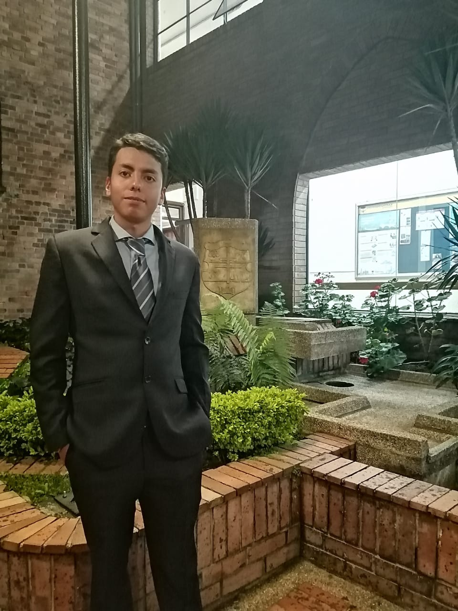

Sergio Steven
Parra Cuesta
Bogotá - Colombia · (+57) 3203633542 · stevenparracuesta@gmail.com
Ingeniero Civil profesional con habilidades flexibles en el área técnica, ejecución de labores, encontrar las soluciones efectivas, con destrezas en distintos software aplicados en ingeniería, como Microsoft Proyect, Excel avanzado, programación y manejo de Sistemas de Información Geográfica (SIG) y diseño web. He ejercido en el área hídrica, con el uso de los SIG para cálculo de parámetros básicos en el diseño de sistemas de captación de agua potable.
Experiencia
Cartografo
Proindesco Ltda
Febrero 2019 - Junio 2019
Análisis de datos geográficos para localizar cuencas, cálculo de sus parámetros básicos para el diseño de sistemas de recolección de agua potable.
Contacto:
Ing. Guillermo Hernández Torres
(+57) 3157274724
Dibujante
Agosto 2017 - Octubre 2017
Trabajo independiente
Dibujo de planos hidráulicos, sanitarios y eléctricos para presentación al dueño de la obra.
Contacto:
Fabián Ancizar Barreto
(+57) 3013114723
Educación
-
Educación profesional
-
Enero 2015 - Abril 2020
Universidad Católica de Colombia
Ingeniero Civil
Bogotá - Colombia
-
-
Educación básica
-
Diciembre 2014
Colegio Católico de Colombia
Básico bachillerato
Bogotá - Colombia
-
-
Estudios formales
-
Julio 2019
Diplomado en Diseño de Sistemas de Infraestructuras
Universidad Católica de Colombia
-
Junio 2017
Nanomateriales – Aplicaciones en ingeniería civil
Universidad Católica de Colombia
-
Junio 2017
Actualización topográfica – Uso de estaciones totales
Universidad Católica de Colombia
-
Junio 2017
Programación en Arduino
Universidad Católica de Colombia
-
-
Estudios no formales
-
Octubre 2020
Framework Django - Python
Independiente
-
Octubre 2020
Diseño de páginas web con JavaScript
Independiente
-
Septiembre 2020
Diseño de páginas web con CSS3
Independiente
-
Julio 2020
Microsoft Project
Independiente
-
Junio 2017
Programación en Python
Independiente
-
Junio 2019
Microsoft Excel avanzado (manejo de fórmulas, macros y Visual Basic)
Curso sin certificado
-
Junio 2019
Matlab básico
Curso sin certificado
-
Diciembre 2018
ESRI ArcGIS 10.5
Independiente
-
Junio 2018
Análisis de estructuras por medio de SAP 2000
Curso sin certificado
-
Febrero 2015
Autodesk AutoCAD
Independiente
-
Habilidades
Herramientas
- Autodesk AutoCAD
- ESRI ArcGIS 10.5
- Microsoft Office Excel (Avanzado)
- Microsoft Project
- SAP 2000
Lenguajes de programacíon
- Arduino
- CSS3
- Framework Django
- JavaScript
- Matlab
- Python
- Visual Basic (Excel)
Intereses
Me gusta investigar sobre el área de la ingeniería, especialmente en el área de la construcción y software. Son áreas complementarias ya que sin la programación no es posible realizar tantos cálculos que se necesitan para distintas labores aplicadas en la ingeniería civil.
Mi deporte favorito es el ciclismo, he ido a lugares increíbles en el departamento de Cundinamarca y Boyacá, y me gusta usarla para movilizarme por la ciudad, es un medio de transporte bastante eficiente y rápido dentro de la ciudad.
El trabajo de grado lo realice sobre hidrología, en el cual por medio de modelos hidrológicos calculé el recurso hídrico disponible en distintos puntos de recolección de agua potable en las cuencas del rio Coello, en la ciudad de Ibagué en el departamento del Tolima y en la cuenca del rio Ceibas, cerca de la ciudad de Neiva en Huila. Para el desarrollo aplique programación en Python y Visual Basic para el tratamiento de una base de datos, esta consta de 30 años de información de distintos paramentos ambientales, para encontrar datos erróneos y complementar información faltante.
Proyectos
-
Diseño de pagina web personal (2020)
SERGIO PARRA - PERFIL
Enlace de acceso: esta pagina web es el correspondiente proyecto
Pagina web creada y publicada como Hobbie
En desarrollo
-
Trabajo de grado (2019)
ANÁLISIS DE OFERTA HÍDRICA SUPERFICIAL A ESCALA DIARIA APLICADA EN CUENCAS COLOMBINANAS
Universidad Católica de Colombia
Enlace de acceso: repositorio Universidad Católica de Colombia
(hdl.handle.net/10983/24227)Trabajo para optar el titulo de Ingeniero Civil.
Culminado